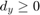

Introduction to SURF (Speeded-Up Robust Features)
SURF keypoint detection + keypoint drawing with OpenCV functions
In this sample you will learn:
- The basics of SURF.
- How to use cv.SURF and its function cv.SURF.detect to perform the detection process in order to find interest points.
- How to use the function cv.drawKeypoints to draw the detected keypoints.
Sources:
Contents
Theory
We previously saw SIFT for keypoint detection and description. But it was comparatively slow and people needed more speeded-up version. In 2006, three people, Bay, H., Tuytelaars, T. and Van Gool, L, published another paper, "SURF: Speeded Up Robust Features" which introduced a new algorithm called SURF. As name suggests, it is a speeded-up version of SIFT.
In SIFT, Lowe approximated Laplacian of Gaussian with Difference of Gaussian for finding scale-space. SURF goes a little further and approximates LoG with Box Filter. Below image shows a demonstration of such an approximation. One big advantage of this approximation is that, convolution with box filter can be easily calculated with the help of integral images. And it can be done in parallel for different scales. Also the SURF rely on determinant of Hessian matrix for both scale and location.

For orientation assignment, SURF uses wavelet responses in horizontal and vertical direction for a neighbourhood of size 6s. Adequate Gaussian weights are also applied to it. Then they are plotted in a space as given in below image. The dominant orientation is estimated by calculating the sum of all responses within a sliding orientation window of angle 60 degrees. Interesting thing is that, wavelet response can be found out using integral images very easily at any scale. For many applications, rotation invariance is not required, so no need of finding this orientation, which speeds up the process. SURF provides such a functionality called Upright-SURF or U-SURF. It improves speed and is robust upto . OpenCV supports both, depending upon the flag, Upright. If it is 0, orientation is calculated. If it is 1, orientation is not calculated and it is faster.

For feature description, SURF uses Wavelet responses in horizontal and vertical direction (again, use of integral images makes things easier). A neighbourhood of size 20sX20s is taken around the keypoint where s is the size. It is divided into 4x4 subregions. For each subregion, horizontal and vertical wavelet responses are taken and a vector is formed like this, . This when represented as a vector gives SURF feature descriptor with total 64 dimensions. Lower the dimension, higher the speed of computation and matching, but provide better distinctiveness of features.
For more distinctiveness, SURF feature descriptor has an extended 128 dimension version. The sums of and are computed separately for and . Similarly, the sums of and are split up according to the sign of , thereby doubling the number of features. It doesn't add much computation complexity. OpenCV supports both by setting the value of flag Extended with 0 and 1 for 64-dim and 128-dim respectively (default is 128-dim).
Another important improvement is the use of sign of Laplacian (trace of Hessian Matrix) for underlying interest point. It adds no computation cost since it is already computed during detection. The sign of the Laplacian distinguishes bright blobs on dark backgrounds from the reverse situation. In the matching stage, we only compare features if they have the same type of contrast (as shown in image below). This minimal information allows for faster matching, without reducing the descriptor's performance.

In short, SURF adds a lot of features to improve the speed in every step. Analysis shows it is 3 times faster than SIFT while performance is comparable to SIFT. SURF is good at handling images with blurring and rotation, but not good at handling viewpoint change and illumination change.
OpenCV provides SURF functionalities just like SIFT. You initiate a SURF object with some optional conditions like 64/128-dim descriptors, Upright/Normal SURF, etc. All the details are well explained in docs. Then as we did in SIFT, we can use cv.SURF.detect, |cv.SURF.compute, etc. for finding keypoints and descriptors.
Code
Read image as grayscale
img = cv.imread(fullfile(mexopencv.root(),'test','butterfly.jpg'), ... 'Grayscale',true);
Detect keypoints using SURF Detector
detector = cv.SURF(); detector.HessianThreshold = 400; tic keypoints = detector.detect(img); toc
Elapsed time is 0.026675 seconds.
whos keypoints
disp(keypoints(1)) Name Size Bytes Class Attributes
keypoints 1x1330 968624 struct
pt: [421.8119 208.1639]
size: 22
angle: 300.0605
response: 1.1092e+05
octave: 0
class_id: -1
Draw keypoints
out = cv.drawKeypoints(img, keypoints); imshow(out);
We increase the Hessian Threshold to some large value. This is just to avoid drawing too many keypoints. In real applications, it is better to have a value between 300 and 500, as we may need all those keypoints when matching.
detector.HessianThreshold = 50000;
keypoints = detector.detect(img);
fprintf('%d keypoints\n', numel(keypoints));48 keypoints
out = cv.drawKeypoints(img, keypoints, ... 'Color',[255 0 0], 'DrawRichKeypoints',true); imshow(out);
Now we apply U-SURF, so that it won't find the orientation.
detector.Upright = true; keypoints = detector.detect(img); out = cv.drawKeypoints(img, keypoints, ... 'Color',[255 0 0], 'DrawRichKeypoints',true); imshow(out);
Finally we change the descriptor size to 128.
disp(detector.descriptorSize)
detector.Extended = true;
disp(detector.descriptorSize)
descriptors = detector.compute(img, keypoints);
whos descriptors64 128 Name Size Bytes Class Attributes descriptors 48x128 24576 single